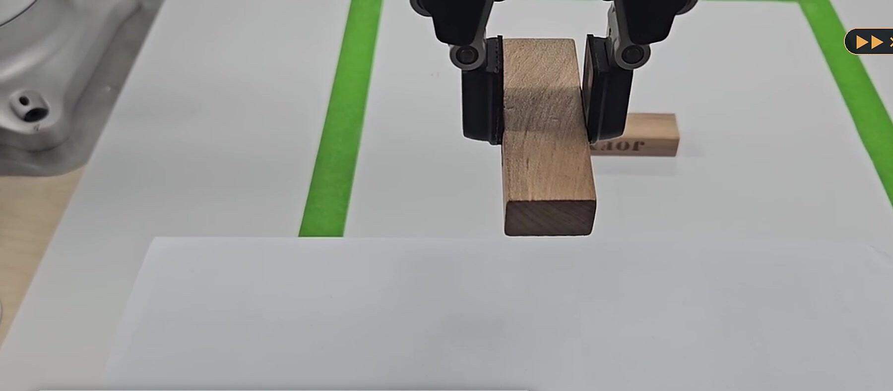
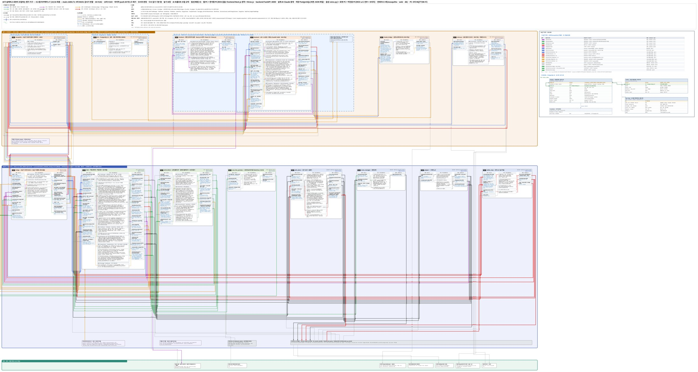
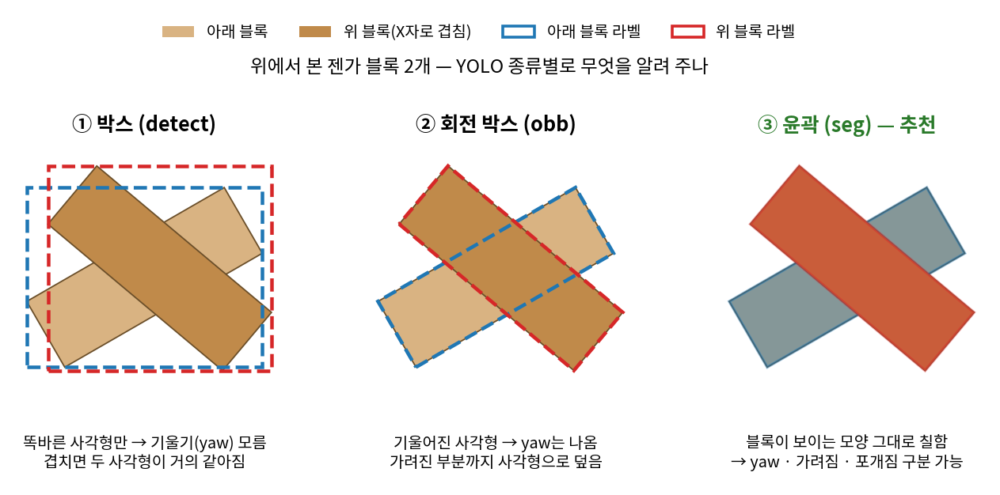

Project 1 · 협동로봇 실기
BuildMind
말로 설계하고, 로봇이 조립한다 — AI 설계 블록 조립 협동로봇

01무엇을 만들었나
사용자가 말이나 글로 "의자 만들어 줘"처럼 요청하면 AI가 블록별 위치 · 방향 · 조립 순서를 담은 설계 후보 3개를 만들고, 규칙 검사와 사람의 승인을 거친 설계만 협동로봇 M0609가 손목 카메라로 흩어진 블록을 찾아 조립합니다. 흐름은 요청 → AI 설계 → 검사 → 승인 → DB 저장 → 로봇 조립 순입니다.
ROS가 없는 웹 PC(Docker로 띄운 Next.js · FastAPI · PostgreSQL · Mosquitto와 호스트의 Claude Code 중계 · 음성 모듈)와 로봇 PC(ROS 2 작업 · 비전 · MoveIt2 · 정지 노드)로 나누고, 두 PC는 MQTT 브리지(d2_bridge) 하나로만 연결했습니다.

02담당 역할
- PL · 통합 — 일정 · PR 규칙 · 결정 기록(123건)을 운영하고, 기능 동결 뒤에는 통합 브랜치에서 자동 시험(2,251개)을 통과한 변경만 main에 넣었습니다.
- AI 설계 생성 — 호스트에서 Claude Code를 중계해 JSON Schema 구조화 출력으로 후보 3개를 받아 형식 오류 0건을 유지했고, 팀의 8단계 검사기에서 떨어진 사유를 다시 보내 최대 2회 재생성하는 루프를 만들었습니다.
- 설계 DB — PostgreSQL에 설계를 부모 · 버전 트리로 저장하고, 비슷한 설계의 요약을 AI가 참고하게 하는 RAG를 붙였습니다.
- 웹 화면 · 브리지 — Next.js · three.js 3D 미리보기, 로봇 카메라 화면, 정지 버튼을 만들고, 로봇 PC와의 MQTT 브리지(d2_bridge)와 웹 PC Docker 구성을 맡았습니다.
- YOLO seg 학습 — 블록 사진 208장의 라벨링 규칙을 세우고, 하이퍼파라미터 조합 비교 학습을 분담해(16조합 중 8개) 최종 모델(yolo26s-seg · 150 epoch)을 골랐습니다.
담당 코드 web/ · src/d2_bridge/ · docs/
03막혔던 문제와 해결 — 겹친 블록을 못 찾던 YOLO
상황
10/8 1차 학습(라벨 v2 · 학습 160장 · 검증 48장)에서 검증 48장 기준 놓친 블록이 102~122개(mAP50 0.87~0.88)였습니다. 흩어진 블록은 찾았지만 다른 블록에 가려진 블록을 놓쳤습니다.
원인
가려져 두 조각으로 보이는 블록을 작업자마다 다르게 라벨링해, 학습 데이터의 기준이 흔들렸습니다.
해결
"큰 조각 하나만 그 블록으로" 규칙(결정 E-66)으로 통일해 팀이 208장을 다시 라벨링했고, 같은 데이터로 모델 5종 · 조합 16개를 비교 학습해 최종 모델을 골랐습니다.
결과
같은 규칙으로 다시 라벨링한 데이터(검증 48장 포함)에서 mAP50 0.972(mAP50-95 0.831 · 재현율 0.954)를 얻었고, 통합 시험에서 블록 집기 162회 중 159회 성공의 바탕이 됐습니다.

04남은 과제
AI 설계 생성은 통과 4건 평균 103초(44~151초)가 걸려 목표인 60초 안에 들지 못했습니다. 검사를 통과한 후보만 남기고 모자란 만큼 다시 만들도록 바꾸면서 시간이 늘었고, 16일 일정에서 기능이 먼저 동작해야 한다고 판단해 생성 전체에 5분 상한을 두는 데서 멈췄습니다. 처음 계획한 "사람과 번갈아 쌓는 협동 모드"는 범위에서 빼고 로봇 단독 조립 · 스캔 복제까지 완성했습니다.
05배운 점
- 모델을 바꾸기 전에 데이터 기준부터 통일해야 결과가 달라집니다.
- 실행 번호를 붙여서 과거의 메시지를 보지 않도록 해결했습니다. 화면에 이전 실행의 진행 상태가 섞여 보인 원인이 MQTT에 지워지지 않고 남아 있던 지난 실행의 메시지였기 때문입니다.
- 코드만큼 반영 순서가 중요합니다. 코드가 main에 다 있어도 화면 재빌드 → 웹 재시작 → 로봇 PC 빌드 순서가 빠지면 이전 화면 · 설정이 그대로 돌아갑니다. 순서를 명령으로 고정했습니다.
06사용 기술
담당 기술
팀 공통 · 연동 환경